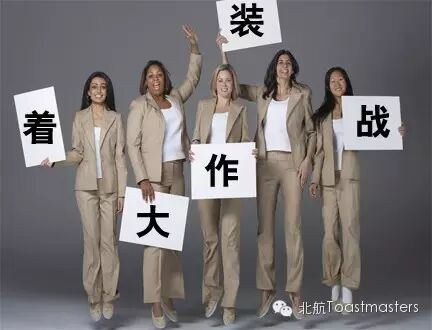

Time:19:30-21:30,Friday,May.29
Venue:Room B208,New Main Building,Beihang University
Table Topic

Toastmaster:Jill Chow
Table Topic Master:Isabelle
What is fashion? Some people think fashion is to be simple, some people think fashion is to be different, and some others think fashion is to be luxurious. What do you think fashion should be like? This time, our lovely fashionable girl, Isabelle, will prepare us some interesting questions about fashion. Are you curious about these questions? Have you got ready for these? Just come to our meeting and have fun with us! (Many beauties and handsome boys are waiting for you here! n(*≧▽≦*)n)
Prepared speeches
1.Four Basic Rules To Stay Healthy
CC1 Grace²
It's obvious that health is the most important thing for us. No matter what you have achieved, you will never be happy and can do nothing without health. So, how to keep our body fit? Our lovely new member, Grace, will share us some useful tips to stay healthy. If you are interested in this speech, just come and join us.
2.What to Wear
CC8 Doris
What to wear? It is really a troublesome question for us, especially for girls! What should I wear for a dating? What should I wear to attend a party? What should I wear to visit our friends? Wow, it's really a big deal in our life. This time, our talented Doris might have some ways to solve this problem. Just look forward to it!

更多惊喜等着你哦！欢迎帅哥们前来捧场，么么哒！
时间：每周五晚7：30-9：30
地点：北航新主楼B座208
联系人： Keven 15810539853
Map

Who are we?
According to Wikipedia, Toastmasters International (TI) is a nonprofit educational organization that operates clubs worldwide for the purpose of helping members improve theircommunication, public speaking, and leadership skills.
See you in the meeting!
Here is the two-dimension code of ourWeChat Subscription.
欢迎关注微信公众平台：北航Toastmasters

https://mp.weixin.qq.com/s/bIiVtPr68VmKXYh315_a0w
本页为抢救式本地归档，图文已永久保存。